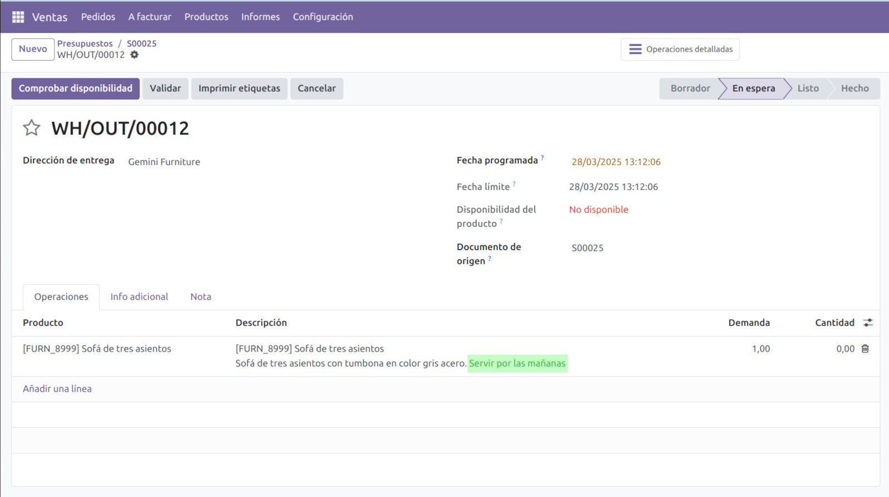

<section class="oe_container">
    <div class="oe_row oe_spaced">
        <h2 class="oe_slogan">Sale Invoicing Journal Selection</h2>
        <h3 class="oe_slogan">Select the accounting journal to use when invoicing pending orders</h3>
        <p>When you invoice pending orders en masse and want to record the generated invoice entries in a specific
            accounting journal, it's most practical to indicate this at the time the invoices are created.
        </p>
        <div>
            
        </div>
    </div>
</section>